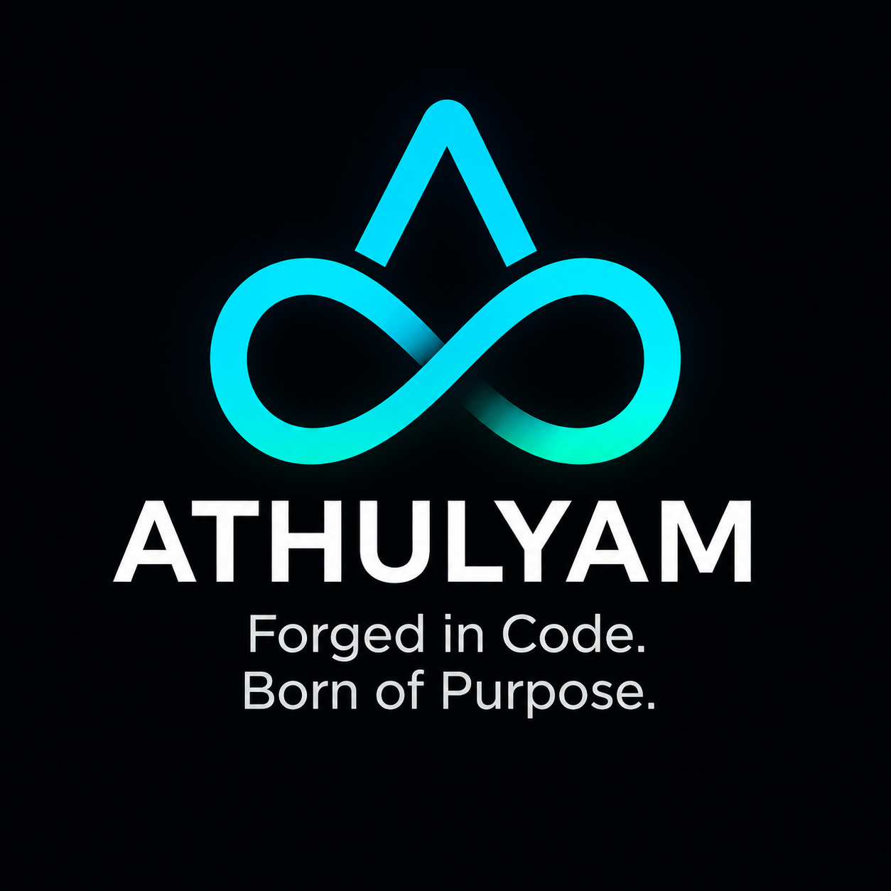

Forged in code. Born of purpose.
The parent entity — the philosophical and operational nucleus of the Athulyam ecosystem. Represents vision, leadership, and unity across all divisions.
Hardware repair, optimization, and diagnostics. The foundation of Athulyam’s precision engineering ethos.
Workstations designed for creators and coders — forged for creation.
Security PCs — privacy-hardened, audit-ready, built for resilience.
Compact edge servers for always-on reliability and silent performance.
Gaming and simulation rigs — built for the frontier.
The tuned kernel and userland layer — where linux-nouas breathes life into the system.
The cybersecurity and privacy wing. Dedicated to digital defense, data sanctity, and system hardening.
R&D lab — the birthplace of custom kernels, new hardware concepts, and system innovations.
Founded on the belief that technology can be human, Athulyam is more than a group — it’s a philosophy. A bond between human and code, forged in purpose and precision.
Forged in code. Born of purpose.
Athulyam is a multidisciplinary technology ecosystem — a union of human intuition and computational precision. Founded on the belief that technology can reflect consciousness, Athulyam exists to build systems that are stable, sustainable, and deeply human.
From the forge of innovation, Athulyam crafts both hardware and software — each component refined through purpose. Our work spans across system design, optimization, and digital security, connecting engineering and artistry into a single continuum.
At its core, Athulyam is not just an enterprise — it is a living philosophy. Every build, every kernel, every idea forged here carries one essence: “A bond between human and code, forged in code.”
Each division of Athulyam represents a pillar of our kingdom — united by precision, innovation, and the pursuit of perfect balance between man and machine.
The heart and command center of the Athulyam ecosystem. Athulyam Enterprises oversees all divisions — guiding innovation, strategy, and integration across our technology and research arms. It represents the philosophy of balance, leadership, and continuity within the Athulyam kingdom.
The foundation of our craft — where hardware meets mastery. TechWorks provides hardware diagnostics, optimization, and tuning for high-performance systems. Every circuit we touch becomes a testament to efficiency and endurance.
Custom-built, Linux-tuned systems handcrafted for creators, engineers, and thinkers. Each machine is a fusion of performance and aesthetic — built not just to compute, but to inspire.
The heartbeat of the Athulyam ecosystem — our custom kernel and userland designed for stability, privacy, and precision. linux-nouas embodies the philosophy of control, balance, and adaptability.
Our shield of defense — building secure infrastructures, hardened systems, and privacy-oriented architectures to keep the digital realm resilient.
The crucible of experimentation and creation. Here, ideas evolve into innovation — from kernel builds to R&D in system architecture, the Forge is where tomorrow takes shape.
Technology is not just built — it is forged. We seek balance between human intuition and computational precision.
“The forge burns not to destroy, but to rebuild. One system, one life, one purpose — reborn through code.”
Athulyam stands for systems that are stable, sustainable, and human-centric. Every circuit, every kernel, every line of code carries intent: to protect, to empower, and to endure.